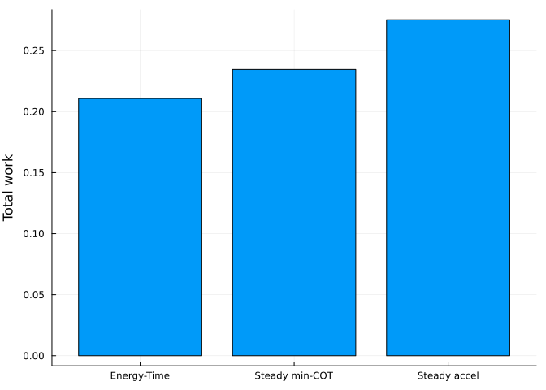
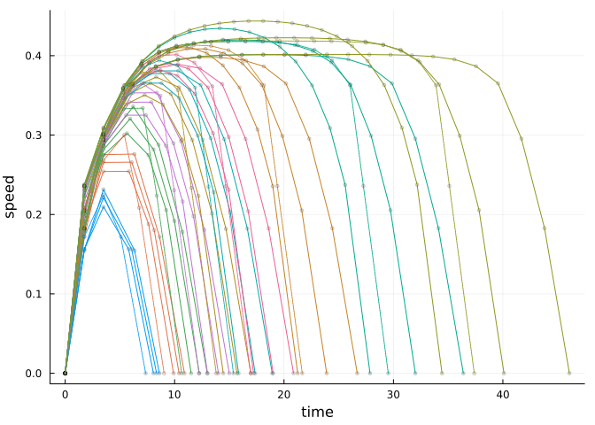
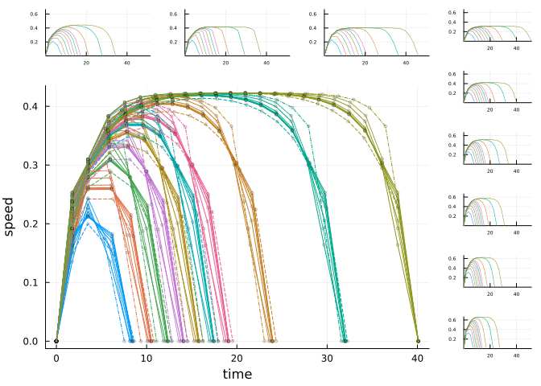
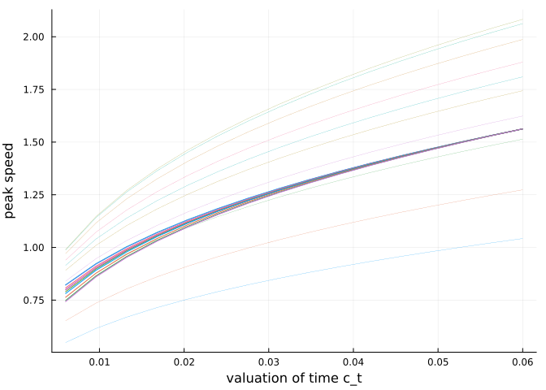

Optimization of energy and time predicts dynamic speeds for human walking (Carlisle and Kuo 2022)
Take walks of varying distances, and show how the optimal trajectory has an inverted-U velocity profile, with peak speed that increases with distance up to about 12 steps, leveling off thereafter. The cost function is net mechanical work, plus a linear cost of time with coefficient ctime.
Go for a single walk
Take a walk of 10 steps, starting and ending at rest. Find the optimal push-offs that minimize total work. The optimization is performed with optwalktime which uses a time cost (relative to work) of tchange.
Code
usingDynLoco, Plots, Statisticswstar4 =findgait(WalkRW2l(α=0.35,safety=true), target=:speed=>0.3, varying=:P)ctime =0.015# cost of time, to encourage hurryingtchange =1.75# boundary condition time to get up to speed (arbitrary, excluded from optimization) p =plot() nsteps =10result =optwalktime(wstar4, nsteps, ctime=ctime) # optimize work and timemultistepplot(result, legend=false) # plot speed, push-off, terrain trajectories
Speed vs time for a short walk. The mid-stance speeds, push-offs, and terrain heights are plotted vs discrete step number.
All quantities are plotted dimensionlessly, with base units of body mass \(M\), leg length \(L\), and gravitational acceleration \(g\). Thus speed is normalized by \(\sqrt(gL)\) and time by \(\sqrt(L/g)\). For a typical leg length of \(L = 1 \mathrm{m}\), the dimensional speed is about 1.25 m/s, and step time about 0.55 s.
Go for walks of verying distance
The predicted speed profile varies with distance. Shorter walks have very brief and slower peaks, and are dominated by speeding up and slowing down. Longer walks have flatter and faster peaks, approching a steady walking speed. Relatively less time is spent speeding up and slowing down.
Code
p =plot() walksteps = [1, 2, 3, 4, 5, 6, 7, 10, 15, 20] # take walks of this # of stepsresults =Array{MultiStepResults,1}(undef,0) # store each optimization result herefor (i,nsteps) inenumerate(walksteps) result =optwalktime(wstar4, nsteps, ctime=ctime) # optimize with a cost of timeplotvees!(p, result, tchange=tchange, usespline=false, color=i, speedtype=:shortwalks, rampuporder=1, markersize=2) # plot instantaneous body speed vs. timepush!(results, result) # add this optimization to results arrayendPlots.display(p) # instantaneous speed vs. distance profiles
Speed vs time for short walks; each trace is a different bout distance
Here the speeds are plotted as “body speed” each step, to match IMU. Model is parameterized by mid-stance speed each step, but IMU data only yields strides. As described by Carlisle and Kuo (2022), we use estimated mid-stance times to estimate body speed.
Compare three objectives: Energy-Time, min-COT, constant acceleration
Walk a fixed number of steps, starting and ending at rest. The objectives are:
Energy-Time minimizes total energy (positive work) plus proportional time cost
min-COT walks at a constant speed that minimizes cost of transport (energy per weight and distance traveled), with a trapezoidal speed profile. This is achieved by minimizing deviation from minCOT speed, to allow model to accelerate to that speed.
Constant accel accelerates at a constant rate, to yield a triangular speed profile. Uses a minimum variance objective to produce a constant rate of velocity change.
Compare for a fixed number of steps.
Code
# A minCOT nominal gaitwstar4n =findgait(WalkRW2l(α=0.35, safety=true), target=:speed=>0.4, varying=:P) # use a speed of 0.4 to match minCOTnsteps =10ctime =0.0195tchange =1.75nominalresult=optwalktime(wstar4n, nsteps, ctime = ctime, boundarywork=true) # to compare with our usual solution# minCOT walk. optwalkvar minimizes variance from nominalminvarresult=optwalkvar(wstar4n, nsteps, boundarywork=true)# steady acceleration walk, which tries to maintain same# acceleration each step, resulting in a triangular speed# profileA =0.0655# 1.9*wstar4n.vm/(nsteps*onestep(wstar4n).tf) # accelerationv0 =0.11# 0.8*A*tchange # a couple acceleration constants# chosen by hand to allow smooth transition from initiation# to push-off.constaccelresult =optwalktriangle(wstar4n, nsteps, A = A, boundarywork=false,boundaryvels=(v0,v0))# Make the plotsp =plot(layout=(1,2))plotvees!(p[1],nominalresult, tchange=tchange, rampuporder=1, usespline =false, markershape=:circle,speedtype=:shortwalks)plotvees!(p[1],minvarresult, tchange=tchange, rampuporder=1, usespline =false,markershape=:circle, speedtype=:shortwalks)plotvees!(p[1],constaccelresult, tchange=tchange, rampuporder=1, usespline =false,markershape=:circle, speedtype=:shortwalks, seriescolor=:auto)plot!(p[2],[0:nsteps+1], [1/2*nominalresult.vm0^2; nominalresult.steps.Pwork; NaN],markershape=:circle,seriescolor=:auto)plot!(p[2],[0:nsteps+1], [1/2*minvarresult.vm0^2; minvarresult.steps.Pwork; NaN],markershape=:circle,xticks=0:nsteps+1)plot!(p[2],[0:nsteps+1], [1/2*constaccelresult.vm0^2; constaccelresult.steps.Pwork; NaN],markershape=:circle,xticks=0:nsteps+1,seriescolor=:auto)plot!(p[2],xlabel="step", ylabel="push-off work", legend=false)energytimework =1/2*nominalresult.vm0^2+sum(nominalresult.steps.Pwork)mincotwork =1/2*minvarresult.vm0^2+sum(minvarresult.steps.Pwork)trianglework = (1/2*constaccelresult.vm0^2+sum(constaccelresult.steps.Pwork))/(1/2*nominalresult.vm0^2+sum(nominalresult.steps.Pwork))Plots.display(p)
Quantify the three predictions. The energy cost for each walk consists of the positive work for gait initiation plus the positive push-off work for all steps. Negative work is ignored, because equal magnitudes of positive and negative work are performed for this task. If there are constant efficiencies for muscles to perform positive and negative work, the physiological cost of negative work is proportional to positive work. This affects the total metabolic cost, but does not affect the optimal solutions.
Code
threecosts = [1/2*nominalresult.vm0^2+sum(nominalresult.steps.Pwork), 1/2*minvarresult.vm0^2+sum(minvarresult.steps.Pwork), 1/2*constaccelresult.vm0^2+sum(constaccelresult.steps.Pwork)]println("The energy-time work is $(threecosts[1])")println("The min-COT work is $(threecosts[2])")println("The const accel work is $(threecosts[3])")bar(threecosts,xticks=((1,2,3),("Energy-Time", "Steady min-COT", "Steady accel")),legend=false,ylabel="Total work")
The energy-time work is 0.21077394712113307
The min-COT work is 0.23455721768541665
The const accel work is 0.2752584233181397

Minimization of cost of transport is not energetically optimal, in part because it requires a costly fast speed-up to reach the min-COT speed. It can be less costly to vary speed dynamically. Steady acceleration is also costly, due to expense of accelerating at high speeds, which requires considerable power.
Shorter and longer step lengths do not affect waveform shapes
Longer steps are more costly because of collisions, but doesn’t change peak speed much. For fixed number of steps, longer steps travel a greater total distance (in greater time) and reach a slightly higher speed. For a fixed distance, longer steps also obviously require fewer steps. The following plot shows fixed step lengths slightly shorter or longer than nominal.
Humans take longer steps at faster steady speeds. Applying the approximate preferred relationship here (step length increasing with \(v^0.42\)) yields similar speed profiles to fixed step lengths. The model here modulates step length, but does not include the swing cost for doing so. That cost is thought to be relatively higher at fast speeds (Kuo 2001).
Code
wstar4 =findgait(WalkRW2l(α=0.35,safety=true), target=:speed=>0.3, varying=:P)wstar43 =findgait(WalkRW2l(α=0.3,safety=true), target=:speed=>0.3, varying=:P) # shorter stepswstar44 =findgait(WalkRW2l(α=0.4,safety=true), target=:speed=>0.3, varying=:P) # longer stepswsteplens = [wstar43, wstar4, wstar44]ctime =0.015# cost of time, to encourage hurryingtchange =1.75p =plot()walksteps = [1, 2, 3, 4, 5, 6, 7, 10, 15, 20] # take walks of this # of stepsresults43 =Array{MultiStepResults,1}(undef,0) # store each optimization result hereresults =Array{MultiStepResults,1}(undef,0) # store each optimization result hereresults44 =Array{MultiStepResults,1}(undef,0) # store each optimization result herepeakspds =zeros(length(walksteps))peakspeeds43 =zeros(length(walksteps))peakspeeds44 =zeros(length(walksteps))durations =zeros(length(walksteps))durations43 =zeros(length(walksteps))durations44 =zeros(length(walksteps))for (i,nsteps) inenumerate(walksteps) result =optwalktime(wsteplens[1], nsteps, ctime=ctime) # optimize with a cost of timeplotvees!(result, tchange=tchange, usespline=false, color=i, speedtype=:shortwalks, rampuporder=1, markersize=2) # plot instantaneous speed vs. timepush!(results43, result) # add this optimization to results array peakspeeds43[i] =maximum(stepspeeds(result.steps)[2]) durations43[i] = result.totaltime result =optwalktime(wsteplens[2], nsteps, ctime=ctime) # optimize with a cost of timeplotvees!(result, tchange=tchange, usespline=false, color=i, speedtype=:shortwalks, rampuporder=1, markersize=2) # plot instantaneous speed vs. timepush!(results, result) # add this optimization to results array peakspds[i] =maximum(stepspeeds(result.steps)[2]) durations[i] = result.totaltime result =optwalktime(wsteplens[3], nsteps, ctime=ctime)# # optimize with a cost of timeplotvees!(result, tchange=tchange, usespline=false, color=i, speedtype=:shortwalks, rampuporder=1, markersize=2) # plot instantaneous speed vs. timepush!(results44, result) # add this optimization to results array peakspeeds44[i] =maximum(stepspeeds(result.steps)[2]) durations44[i] = result.totaltimeend# longer steps took longer and resulted in almost same peak speed but of course traveled fartherdistances43 = [sum(result.steps.steplength) for result in results43]distances = [sum(result.steps.steplength) for result in results]distances44 = [sum(result.steps.steplength) for result in results44]# now applying steps increasing with v^0.42 using WalkRW2lvs (linearized, varying step length)wstar4vs =findgait(WalkRW2lvs(α=0.35,safety=true), target=:speed=>0.3, varying=:P)ctime =0.05# cost of time, to encourage hurryingtchange =1.75#pv = plot()walksteps = [1, 2, 3, 4, 5, 6, 7, 10, 15, 20] # take walks of this # of stepsresultvss =Array{MultiStepResults,1}(undef,0) # store each optimization result heretees =zeros(length(walksteps),3)peakspeedvss =zeros(length(walksteps))durationvss =zeros(length(walksteps))for (i,nsteps) inenumerate(walksteps) result =optwalktime(wstar4vs, nsteps, ctime=ctime) # optimize with a cost of timeplotvees!(result, tchange=tchange, usespline=false, speedtype=:shortwalks, color=i, rampuporder=1, markersize=2, linestyle=:dot) # plot instantaneous speed vs. timepush!(resultvss, result) peakspeedvss[i] =maximum(stepspeeds(result.steps)[2]) durationvss[i] = result.totaltime# add this optimization to results arrayenddistancevss = [sum(result.steps.steplength) for result in resultvss] Plots.display(p) # instantaneous speed vs. distance profiles

The valuation of time affects peak speed, but preserves self-similarity of speed profiles
Here we vary the valuation of time \(c_T\) by an order of magnitude, and find that it causes peak speeds to approximately double. The main plot below shows variations in \(c_T\) and in step length all scaled to resemble each other and superimposed. The scaling is used to demonstrate self-similarity of speed profiles regardless of step length and \(c_T\). The insets show variation in step length in unscaled form (horizontal insets, also shown above), and variation in \(c_T\) in unscaled form (vertical insets).
Walks are shown for between 1 and 20 steps, for three fixed step lengths (plus varying step length according to human preference), for six different valuations of time (\(c_T\) ranging 0.006 to 0.06). All units are dimensionless, using body mass \(M\), leg length \(L\), and gravitational acceleration \(g\) as base units. For a person of typical leg length \(L = 1\,\textrm{m}\), the nominal speed is equivalent to 1.25 m/s.
Code
wstar4 =findgait(WalkRW2l(α=0.35), target=:speed=>0.3, varying=:P)ctimes = (0.006, 0.015, 0.0276, 0.0384, 0.0492, 0.06) # valuation of time over a large rangetchange =1.75walksteps = [1, 2, 3, 4, 5, 6, 7, 10, 15, 20] # take walks of this # of stepspeaks =zeros(length(walksteps),length(ctimes))durations =similar(peaks)results =Array{MultiStepResults,2}(undef,(length(walksteps),length(ctimes))) # store each optimization result herefor (j,ctime) inenumerate(ctimes)for (i,nsteps) inenumerate(walksteps) result =optwalktime(wstar4, nsteps, ctime=ctime) # optimize with a cost of time peaks[i,j] =maximum(stepspeeds(result.steps)[2]) durations[i,j] = result.totaltime results[i,j] = resultendendtbase = durations[end,2]vbase = peaks[end,2]pleft =plot(; )#@layout [grid(1,3); a{0.86h}])pright =plot(; layout=grid(6,1))ptop =plot(; layout=grid(1,3))for (j, ctime) inenumerate(ctimes)for (i,nsteps) inenumerate(walksteps) result = results[i,j]plotvees!(pright,result, tchange=tchange, color=i, usespline=:false, speedtype=:shortwalks,markersize=0, subplot=j, xticks = [20,40], yticks=[0.2,0.4,0.6],xguide="",yguide="",tickfontsize=4, xlims=(0,maximum(durations)+3tchange), ylims=(0,maximum(peaks)), linewidth=0.5) # subplot instantaneous speed vs. timeplotvees!(pleft,result, tchange=tchange, color=i, usespline=:false, speedtype=:shortwalks,markersize=2, tscale = tbase/(durations[end,j]), vscale = vbase/peaks[end,j],subplot=1) # main scaled speed vs timeendendfor (i,result) inenumerate(resultvss) # add in the variable step length results computed above in resultvss (dash-dot lines)plotvees!(pleft,result, tchange=tchange, usespline=false, speedtype=:shortwalks, color=i, markersize=2, linestyle=:dashdot,subplot=1, tscale = tbase/(durationvss[end]),vscale = vbase/peakspeedvss[end]) # plot instantaneous speed vs. timeplotvees!(ptop,result, tchange=tchange, color=i, usespline=:false, speedtype=:shortwalks,markersize=0, xticks = [20,40], yticks=[0.2,0.4,0.6],subplot=2,xguide="",yguide="",tickfontsize=4, xlims=(0,maximum(durations)+3tchange), ylims=(0,maximum(peaks)), linewidth=0.5)endfor (i,result) inenumerate(results43) # add in shorter steps (dashed lines)plotvees!(pleft,result, tchange=tchange, color=i, usespline=:false, speedtype=:shortwalks,markersize=2, tscale = tbase/(durations43[end]), vscale = vbase/peakspeeds43[end],subplot=1, linestyle=:dash)plotvees!(ptop,result, tchange=tchange, color=i, usespline=:false, speedtype=:shortwalks,markersize=0, xticks = [20,40], yticks=[0.2,0.4,0.6],subplot=1,xguide="",yguide="",tickfontsize=4, xlims=(0,maximum(durations)+3tchange), ylims=(0,maximum(peaks)), linewidth=0.5)endfor (i,result) inenumerate(results44) # add in longer steps (dotted lines)plotvees!(pleft,result, tchange=tchange, color=i, usespline=:false, speedtype=:shortwalks,markersize=2, tscale = tbase/(durations44[end]), vscale = vbase/peakspeeds44[end],subplot=1, linestyle=:dot)plotvees!(ptop,result, tchange=tchange, color=i, usespline=:false, speedtype=:shortwalks,markersize=0, xticks = [20,40], yticks=[0.2,0.4,0.6],subplot=3, xguide="",yguide="",tickfontsize=4, xlims=(0,maximum(durations)+3tchange), ylims=(0,maximum(peaks)), linewidth=0.5)endprintln("Durations of a factor of ", (durations[end,1]+2tchange)/(durations[end,end]+2tchange))println("Peak speeds over a range of ", peaks[end,end]/peaks[end,1])println(" about ", peaks[end,1]*sqrt(9.81)," to ", peaks[end,end]*sqrt(9.81), "m/s")peaks[end,:]*sqrt(9.81)plot(ptop, pleft, pright, layout=@layout [ [a{0.15h}; b] c{0.15w}])
Durations of a factor of 1.931255229426271
Peak speeds over a range of 2.102877847668059
about 0.9904474300431949 to 2.0827899599175943m/s

Peak speeds and durations increase with distance
Peak speeds increase toward a saturating value with increasing distance. This relationship is self-similar, in that even with different fixed or varying step lengths, the saturating behavior is similar.
The time duration to walk a distance also increases with distance, approaching a straight asymptote with longer distances. The prediction is more curved for shorter distances.
The following plot shows how peak speeds increase with distance. Greater \(c_T\) shifts the peak speed upward. The thin lines show the absolute durations, and the thick lines show the durations after scaling them to demonstrate self-similarity. (The results here also include different step lengths.)
The following shows how walking durations increase with distance. Greater \(c_T\) results in shorter durations, but the relationship is self-similar. The thin lines show the absolute durations, and the thick lines show the durations after scaling them to demonstrate self-similarity.
The following plot shows peak speed vs valuation of time \(c_T\). The thin lines show the absolute speeds, and the thick lines show the speeds after scaling them to demonstrate self-similarity. Also included here are walks of various distances, where longer walks have a peak speed that is nearly steady, and shorter walks have only brief peaks. Nevertheless, peak speed increases with \(c_T\), with a roughly cube root relationship.
Code
## Vary ct and # steps, with finer increments than beforemorectimes =range(ctimes[begin], ctimes[end], length=16)walksteps = [1,2,3,4,5,6, 7, 10, 15, 20] # take walks of this # of stepscresults = [optwalktime(wstar4, nsteps, ctime=ctime) for nsteps in walksteps, ctime in morectimes]cpeaks = [maximum(stepspeeds(r.steps)[2]) for r in cresults]cdurations = [r.totaltime for r in cresults]sec =sqrt(1/9.81); mps =sqrt(9.81)p1=plot(morectimes, mps.*cpeaks',legend=false,xlabel="c_t",ylabel="peak speed",linewidth=0.2)plot!(p1,morectimes, mps.*(cpeaks .*middle(cpeaks[:,end])./maximum(cpeaks,dims=2))',linewidth=1,legend=false, xlabel="valuation of time c_t",ylabel="peak speed")

Experimental data
The data from accompanying human subjects experiment are available in a separate data and code repository. The code is in Matlab, and the data files are in .mat format, which is compatible with HDF5.
Carlisle, R. Elizabeth, and Arthur D. Kuo. 2022. “Optimization of Energy and Time Predicts Dynamic Speeds for Human Walking.”bioRxiv. https://doi.org/10.1101/2022.07.15.500158.